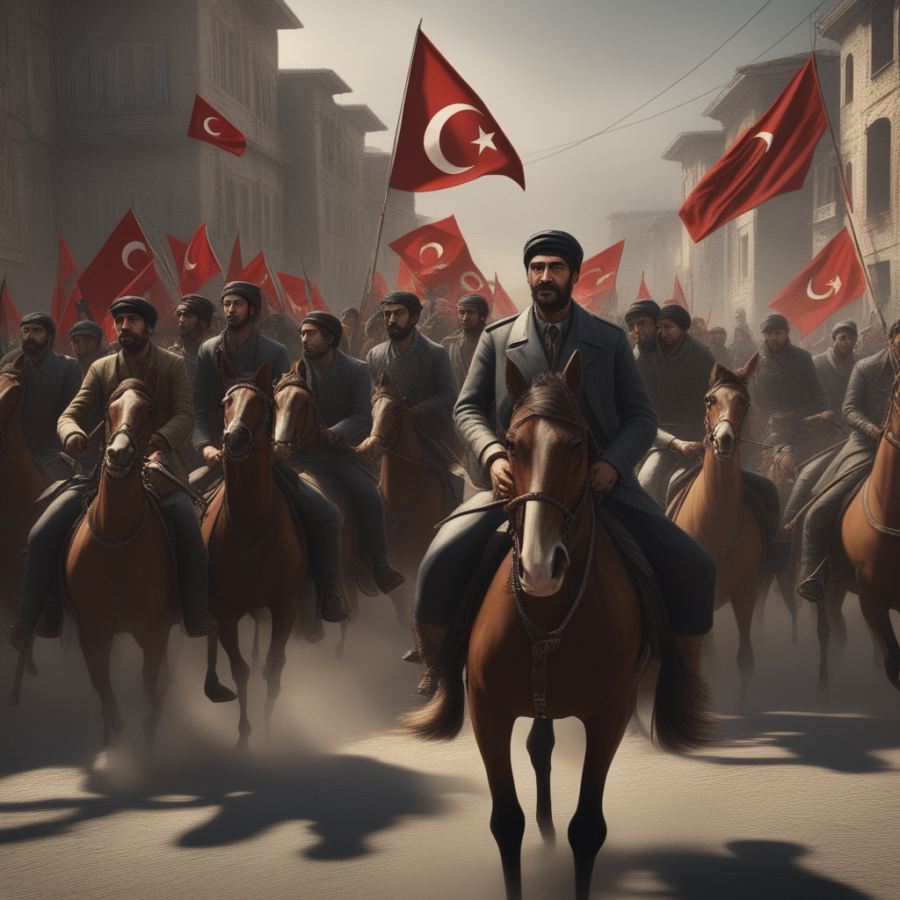

Reformasi Tanzimat: Modernisasi dan Perubahan Sosial di Kekaisaran
Ottoman

Reformasi Tanzimat adalah serangkaian perubahan politik, hukum,
dan sosial yang dilakukan oleh Kekaisaran Ottoman pada abad ke-19.
Proses reformasi ini dimulai pada pertengahan abad ke-19 dan
berlangsung hingga awal abad ke-20. Tanzimat secara harfiah
berarti "reformasi" dalam bahasa Turki. Reformasi ini bertujuan
untuk memodernisasi dan mengubah sistem politik, hukum, dan sosial
Kekaisaran Ottoman agar sesuai dengan tuntutan zaman. Berikut
adalah beberapa tahapan utama dalam sejarah Reformasi Tanzimat:
Pada awal abad ke-19, Kekaisaran Ottoman menghadapi tekanan dari luar dan mengalami kemunduran militer serta ekonomi. Keadaan ini mendorong para pejabat Ottoman untuk mempertimbangkan perlunya reformasi. Pada tahun 1839, Sultan Abdulmecid I mengeluarkan Hati-hati Tanzimat (Hatti Sherif of Gülhane), yang dianggap sebagai langkah awal dari Reformasi Tanzimat. Dokumen ini menjanjikan hak asasi, perlindungan hukum yang setara bagi semua warga, dan pembaruan dalam administrasi negara.
Reformasi Tanzimat mencakup pembaharuan dalam sistem hukum dan administrasi. Pada tahun 1839 dan 1856, emansipasi budak-budak diumumkan, dan serangkaian hukum yang mengatur hak-hak individu dan persamaan di hadapan hukum diberlakukan. Sistem hukum pidana dan perdata yang modern diperkenalkan, dan administrasi negara diubah untuk meningkatkan efisiensi dan transparansi.
Pendidikan menjadi fokus utama dalam Reformasi Tanzimat. Sistem pendidikan umum diperkenalkan, sekolah-sekolah modern didirikan, dan kurikulum diperbarui. Tujuannya adalah untuk menghasilkan generasi yang lebih terdidik dan mempersiapkan masyarakat untuk menghadapi perubahan zaman.
Reformasi juga menyentuh sektor militer. Pembaharuan militer dilakukan untuk meningkatkan kemampuan militer dan menghadapi ancaman dari kekuatan Eropa. Pembentukan tentara profesional yang terlatih dengan baik menjadi salah satu aspek utama dalam perubahan ini.
Meskipun Reformasi Tanzimat diharapkan untuk membawa perubahan positif, tetapi juga menghadapi tantangan dan ketidaksetujuan dari beberapa pihak tradisionalis di dalam masyarakat. Beberapa kelompok konservatif menolak perubahan dan melihatnya sebagai ancaman terhadap nilai-nilai tradisional.
Reformasi Tanzimat berlanjut sepanjang abad ke-19 dan awal abad ke-20, walaupun tidak selalu berjalan mulus dan sering kali dihadapi oleh tantangan internal maupun eksternal. Reformasi ini, meskipun belum sepenuhnya mencapai tujuan-tujuannya, tetapi telah membawa Kekaisaran Ottoman menuju jalur modernisasi yang lebih besar dan membentuk dasar-dasar bagi reformasi selanjutnya.
Awal Abad ke-19
Pada awal abad ke-19, Kekaisaran Ottoman menghadapi tekanan dari luar dan mengalami kemunduran militer serta ekonomi. Keadaan ini mendorong para pejabat Ottoman untuk mempertimbangkan perlunya reformasi. Pada tahun 1839, Sultan Abdulmecid I mengeluarkan Hati-hati Tanzimat (Hatti Sherif of Gülhane), yang dianggap sebagai langkah awal dari Reformasi Tanzimat. Dokumen ini menjanjikan hak asasi, perlindungan hukum yang setara bagi semua warga, dan pembaruan dalam administrasi negara.
Hukum dan Administrasi
Reformasi Tanzimat mencakup pembaharuan dalam sistem hukum dan administrasi. Pada tahun 1839 dan 1856, emansipasi budak-budak diumumkan, dan serangkaian hukum yang mengatur hak-hak individu dan persamaan di hadapan hukum diberlakukan. Sistem hukum pidana dan perdata yang modern diperkenalkan, dan administrasi negara diubah untuk meningkatkan efisiensi dan transparansi.
Pendidikan
Pendidikan menjadi fokus utama dalam Reformasi Tanzimat. Sistem pendidikan umum diperkenalkan, sekolah-sekolah modern didirikan, dan kurikulum diperbarui. Tujuannya adalah untuk menghasilkan generasi yang lebih terdidik dan mempersiapkan masyarakat untuk menghadapi perubahan zaman.
Militer
Reformasi juga menyentuh sektor militer. Pembaharuan militer dilakukan untuk meningkatkan kemampuan militer dan menghadapi ancaman dari kekuatan Eropa. Pembentukan tentara profesional yang terlatih dengan baik menjadi salah satu aspek utama dalam perubahan ini.
Akibat dan Tantangan
Meskipun Reformasi Tanzimat diharapkan untuk membawa perubahan positif, tetapi juga menghadapi tantangan dan ketidaksetujuan dari beberapa pihak tradisionalis di dalam masyarakat. Beberapa kelompok konservatif menolak perubahan dan melihatnya sebagai ancaman terhadap nilai-nilai tradisional.
Reformasi Tanzimat berlanjut sepanjang abad ke-19 dan awal abad ke-20, walaupun tidak selalu berjalan mulus dan sering kali dihadapi oleh tantangan internal maupun eksternal. Reformasi ini, meskipun belum sepenuhnya mencapai tujuan-tujuannya, tetapi telah membawa Kekaisaran Ottoman menuju jalur modernisasi yang lebih besar dan membentuk dasar-dasar bagi reformasi selanjutnya.